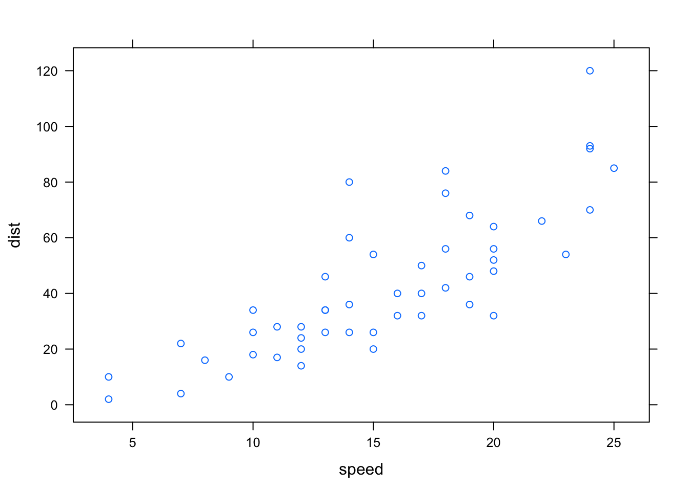

3 Interactive R plots using lower level tools
Web interactive graphics can be achieved by R users without the knowledge of HTML, CSS and JavaScript. However, many of these tools use an external JavaScript library to render their plots. This section discusses how we can use two lower level packages, gridSVG(Murrell and Potter 2017) and DOM(Murrell 2016b) to incorporate interactions into R plots and prevent redrawing entire plots. One approach to avoid this is to target parts of the plot that need to be updated. We need a system that renders SVG elements but has a mapping structure that allows elements to be related back to data. In R, we can use the gridSVG package. By combining gridSVG, shiny and JavaScript, we are able to update specific parts of the plot when the user interacts with an input by passing JavaScript messages between R and the browser. Because interactions are achieved by manipulating web content using the DOM, we can alternatively use the DOM package that directly allows us to drive web content from R without the need for writing JavaScript. We will discuss how these different approaches work.
3.1 gridSVG
gridSVG (Murrell and Potter 2017) is an R package that allows for the conversion of grid graphics in R into SVG. This is powerful because it is easy to attach interactions to specific elements on the page. The advantage of using gridSVG over others is that there is a clear mapping structure between elements in the data set and SVG elements generated. This is not clear in plotly or ggvis and their JavaScript libraries, which makes it hard to identify or trace data back to the elements on the page. This also explains why it may be difficult to customise interactions on the plot. With gridSVG, we can add JavaScript to grid elements in R using grid.script() and grid.garnish() (Murrell and Potter 2014).
Figure 3.1: an interactive circle made using gridSVG
Hover over the circle above and it will turn red!
grid.circle(x = 0.5, y = 0.5, r = 0.25, name = "circle.A", gp = gpar(fill = "yellow"))
grid.garnish('circle.A', onmouseover = "allred()", onmouseout = "allyellow()", "pointer-events" = "all")
grid.script("allred = function() {
var circle = document.getElementById('circle.A.1.1');
circle.setAttribute('fill', 'red');
}")
grid.script("allyellow = function() {
var circle = document.getElementById('circle.A.1.1');
circle.setAttribute('fill', 'yellow');
}")
grid.export("circle.svg")In Figure 3.1, the circle has been drawn in R, named and have interactive elements added before being exported out as an SVG. A simple interaction has been attached to the circle where if the user hovers over the circle, it will turn red. This shows that there is a relationship between grid objects and SVG objects that are generated. In grid, we have named the circle as circle.A. gridSVG maintains this as an grouped SVG element with an id attribute of circle.A.1, where inside lies a single SVG circle element called circle.A.1.1. In R, we can refer back to these grid objects to attach interactions to their SVG counterparts.
Another important feature gridSVG has is the ability to translate between data and SVG coordinates(Murrell and Potter 2012). Suppose that a plot has been generated. The exportCoords argument in grid.export is able to generate data that retains the locations of viewports and scales from the original plot in R (Murrell and Potter, 2012). We can use this information to convert data to SVG coordinates and vice versa.
To demonstrate, we have drawn a plot using the cars data set and exported its coordinate system with its corresponding SVG. We have separated the svg and the coordinates.
xyplot(dist ~ speed, data = cars)
svgdoc <- grid.export(NULL, exportCoords = "inline")
# separate the svg and coordinates
svg <- svgdoc$svg
coords <- svgdoc$coordsTo be able to use the coordinate system in R to convert between data and SVG coordinate systems, we need to load it in by calling gridSVGCoords.
gridSVGCoords(coords)Suppose we have a new point at (4, 5). To be able to convert this in the correct coordinate space, we need to find the correct viewport (identified as panel) it lies in. This can then be easily translated into SVG co-ordinates and back using the functions viewportConvertX and viewportConvertY with panel.
# to identify the correct panel:
panel <- "plot_01.toplevel.vp::plot_01.panel.1.1.vp.2"
# if there's a new point we want to find the SVG coordinates of:
(x <- viewportConvertX(panel, 4, "native"))## [1] 79.48421(y <- viewportConvertY(panel, 5, "native"))## [1] 73.45The native co-ordinates (4, 5) have been translated as (79.48, 73.45) in the SVG co-ordinate system. This can be further added on to the web page without redrawing the rest of the plot as we have the co-ordinates in the SVG space using JavaScript. We can also translated the coordinates back into data to return (4, 5).
# to translate back to data (ie native):
viewportConvertX(panel, x, "svg", "native")## [1] 4viewportConvertY(panel, y, "svg", "native")## [1] 5The main limitations of this package are clear by its name. Only plots that are defined by the grid graphics system can be converted into SVG. This means that plots defined using base R cannot be directly converted (Murrell and Potter 2014). There is a solution to this using the gridGraphics (Murrell 2015) package that can converts base R graphics into grid graphics (further demonstrated in Section 4.2.1). Another point to note is that the process of converting elements to SVG becomes slow when there are many elements to render although work is under way on this to speed up conversion.
3.1.1 Customising simple plot interactions
A clear limitation that is present in the existing tools discussed previously is letting the user add their own interactions on an existing plot.
Figure 3.2: An example of a customised box plot interaction on an iNZight plot using gridSVG, JavaScript
Hover over Figure 3.2’s box and it will light up in red. Click on the box to highlight the points that lie within that range.
One such example is highlighting part of a box plot to show certain values between the median and the lower quartile (Figure 3.2). When the user clicks on this box, it will highlight the points that lie within this range. While this can be achieved with gridSVG and custom JavaScript, it is not as straightforward with plotly or ggvis. Despite plotly and ggvis also rendering graphs in SVG, it is more difficult to identify which elements to target and add interactions to with these systems.
3.1.2 Preventing redraws in shiny using JavaScript messages and gridSVG
As mentioned at the end of Chapter 2, one of the downsides of using shiny along with plotly or other htmlwidgets is its nature to redraw plots every time an input changes. With R plots that are rendered using the renderPlot function, redrawing is required because the plot is viewed as a raster image. In other cases, shiny simply re-runs code when a user interacts with an input, which causes the plot to be redrawn. This means that we cannot specifically target elements on the page as the plot is viewed as a single object.
A new approach is to render the plot in SVG and target certain elements that need to be redrawn while using shiny to communicate back to R. If we use SVG, we can separate out which components to target and add interactions without changing the rest of the plot. A complication to this is that we can no longer use the usual shiny input and output functions that link everything on the page. shiny also does not have specific functions to control SVG content. A different way to do this is to pass data between the browser and back to R using JavaScript to change certain elements on the web page. shiny provides a set of functions that allow for messages to be sent through this channel using two JavaScript functions: shiny.onInputChange() and shiny.addCustomMessageHandler() (Heckmann 2013). To send data from the browser back to R, we use shiny.onInputChange(). This allows JavaScript objects to be sent back to the shiny server in a way which can be recognised in R. To send data from R back to the browser, we use shiny.addCustomMessageHandler().
To demonstrate how this is useful in updating certain parts of a plot, we provide an example by altering a smoothing curve using gridSVG and these JavaScript functions. First, we use gridSVG to generate our plot and identify the element corresponding to the trend line. We also need to export the coordinates in order to be able to transform data into the correct SVG coordinates when we update the co-ordinates of trend line.
Figure 3.3: diagram of how things work using shiny’s JavaScript functions in Figure 3.4
In Figure 3.3, we can pass the degree of smoothing value from the slider back to R. R then recalculates the x and y co-ordinates of the new smooth. Once these co-ordinates are calculated, they are sent back to the browser using session$sendCustomMessage. These coordinates are passed to shiny.addCustomMessageHandler() to run a JavaScript function that will update the points of the line. This process is used in Figure 3.4 with a lattice plot of the iris data set.
Figure 3.4: A replica of Figure 2.7, but only the trendline changes
This is a static image. Click here to view the shiny application of this example.
This example (Figure 3.4) is extensible as we can render grid graphics (such as lattice) and customise interactions while maintaining a connection between R and the browser using shiny. By doing this rather than redrawing the entire plot, we have only changed the trend line. This method does, however, require the knowledge of JavaScript and the limitations of how much information can be sent through are unknown as it is not commonly used.
To stretch this example further, we added in a feature where the user can highlight over a set of points by dragging the mouse (as seen in Figure 3.5). We return the information about these highlighted points in order to further compute a smoother for just these points. To achieve this in shiny, we have written some JavaScript that returns the indices of these selected points back to R with shiny.onInputChange() to compute a suitable smoother which is then displayed.
Figure 3.5: Select over a set a points to show a smoother
This is a static image. Click here to view the shiny application of this example.
3.2 DOM package
As highlighted in section 1, many interactions driven on the web are done by DOM (Document Object Model) manipulation. In brief, the Document Object Model is a programming interface that allows developers to manipulate content on a web page (W3C 2009). We can use it to navigate and pinpoint specific elements on the page to modify and add interactions to. Generally, this is accessed through by writing JavaScript functions.
Because most interactions are driven by JavaScript and involve modifying content on the page, the DOM package (Murrell 2016b) allows for us to directly do this from R. We can send requests back and forth between R and the browser. This provides a basis for using the web browser as an ‘interactive output device’ (Murrell 2016a).
Using the DOM package allows us to write certain commands that are analogous to what is written in JavaScript. This removes the burden of traversing between the two programming languages. Rather than writing JavaScript, we can write DOM commands in R that produce similar results. Going back to our circle example in Figure 3.1, we can change the colour of the circle by directly sending this request to the web page.
circle <- getElementById(page, "circle.A.1.1", response = nodePtr())
setAttribute(page, circle, "fill", "red")In contrast, the JavaScript code for changing this circle from yellow to red:
var circle = document.getElementById('circle.A.1.1');
circle.setAttribute(fill, "red");The DOM package is also special in which we are able to do asynchronous programming (async = TRUE) (Murrell 2016a). Asynchronous programming is a concept where we are able to start an initial task and run different tasks at the same time. Here, the DOM package is able to run a task from R to the browser but also be able to run commands in R while the call to the browser is still running. This is important as it makes our web applications more efficient than trying to run each command or task one at a time. When we need to call back to R from the browser, these are all asynchronous events that can easily react to user interactions, making it more responsive and creates a smoother experience for the user.
DOM allows R to be called from the browser and for requests from R to be sent to the browser. To demonstrate this, we will replicate the hover effects on the circle as shown in Figure 3.1. Figure 3.6 shows how this can be set up using DOM. We can use setAttribute to set the colour of the circle, and use the RDOM.Rcall function to send requests from the browser back to R. When the user hovers over the circle, the browser will send a request back to R to run the turnRed function, which in turn sends a request back to the browser to change the colour of the circle to red. Once the user hovers out, the browser will send a request back to R to turn it back to yellow. Our result is shown in Figure 3.7.

Figure 3.6: Simple diagram showing how DOM works with from replicating Figure 3.1
Figure 3.7: DOM example of Figure 3.1 - when hovered, the circle turns red (right)
Note: this is a static image. Click here to view this example.
The example (Figure 3.7) takes approximately 40 lines of code for a hover effect. It is much more ‘lower level’ and requires the user to know how the Document Object Model and main web technologies work together. A different approach would be to write some JavaScript and send it across to the browser from R. Since we are only just changing the colour of the circle, it is more efficient to write JavaScript and send it to the browser instead rather than telling the browser to call back to R. It is better to call back to R when a computation is necessary (such as recomputing a trend line’s co-ordinates in the Section 3.2.1).
3.2.1 Comparing DOM to shiny
DOM is similar to shiny as it establishes a connection between R and the browser. To compare, we have replicated Figure 3.4 using DOM.

Figure 3.8: Steps on how a trend line can be altered using the DOM package
The process of creating this example is similar to what was done with shiny. However, it is more difficult to set up as it requires the user to manually link all the components on the page. First, we draw the plot and save it as an SVG in memory. Next, we can add the SVG plot and a slider to the page. We identify which element corresponds to the trend line, and define what happens when the slider moves or when text is clicked. This requires an additional query to the browser to return the value of the slider before it can be returned back to R, as shown in Figure 3.8. These are co-ordinated using asynchronous callbacks, where once a response is returned, we can schedule another task behind it. These can be viewed as a series of steps that are linked together. Once the value of the slider is returned, we can use it to recalculate the coordinates of the trend line before updating it on the page. Our final result is put together in Figure 3.9.
Figure 3.9: DOM example of Fig 3.4 for changing a trendline using a slider
Note: this is a static image. Click here to view this example.
DOM allows for more flexibility as we have control over the entire page. From a developer’s perspective, we can continue to modify elements on the page. Users have access to R while the the connection to the web page is running. We can also run a number of interactive web pages in a single R session. In shiny, we are unable to use R in a single session or be able to change it without stopping the application. Furthermore, a shiny application can only do one task at a time, and cannot run tasks asynchronously. However, this may be resolved by the promises package (Cheng 2017b) in the near future, which allows for asynchronous programming within R and thus, more responsive shiny applications (Cheng 2017a). A caveat of using the DOM package is that requires a lot more code to link everything together. In shiny, these links between inputs and outputs are much easier to co-ordinate.
Internally, there are many limitations with this package. As this package is still developmental, only part of the DOM (Document Object Model) API has been expanded, and the connection between R and the browser requires extra attention (Murrell 2016a). In some cases, it is still not possible to achieve certain interactions without JavaScript, such as capturing where the mouse’s position is on screen. Murrell (2016a) states that it can only be run locally and is currently aimed at a single user rather than multiple users.
gridSVG, DOM and shiny provide ways in which we can bind custom JavaScript to elements, but requires the user to be able to define what kind of interactions they wish to achieve.
There is a clear trade off between existing tools. It is possible to customise interactions on existing plots, but this requires a knowledge of JavaScript in order to do so. Comparatively, tools that provide standard web interactive plots are easier to use but are complex to modify and extend further. In the next section, we discuss how we can simplify the implementation of certain interactions on plots originally rendered in R and build a solution using these tools.
References
Cheng, Joe. 2017a. Async Programming in R and Shiny. https://medium.com/@joe.cheng/async-programming-in-r-and-shiny-ebe8c5010790.
———. 2017b. Promises: What the Package Does (Title Case).
Heckmann, Mark. 2013. Sending Data from Client to Server and Back Using Shiny. https://ryouready.wordpress.com/2013/11/20/sending-data-from-client-to-server-and-back-using-shiny/.
Murrell, Paul. 2015. GridGraphics: Redraw Base Graphics Using ’Grid’ Graphics. https://CRAN.R-project.org/package=gridGraphics.
———. 2016a. An Introduction to the ’Dom’ Package. https://www.stat.auckland.ac.nz/~paul/Reports/DOM/Intro/DOM-Intro.html.
———. 2016b. DOM: Interact with Web Browser Dom.
Murrell, Paul, and Simon Potter. 2012. Working with the gridSVG Coordinate System. https://www.stat.auckland.ac.nz/~paul/Reports/gridSVGcoords/coordinates.html.
———. 2014. “The gridSVG Package.” R Journal 6 (1): 133–43. https://journal.r-project.org/archive/2014/RJ-2014-013/RJ-2014-013.pdf.
———. 2017. GridSVG: Export ’Grid’ Graphics as Svg. https://CRAN.R-project.org/package=gridSVG.
W3C. 2009. Document Object Model (Dom). https://www.w3.org/DOM/.